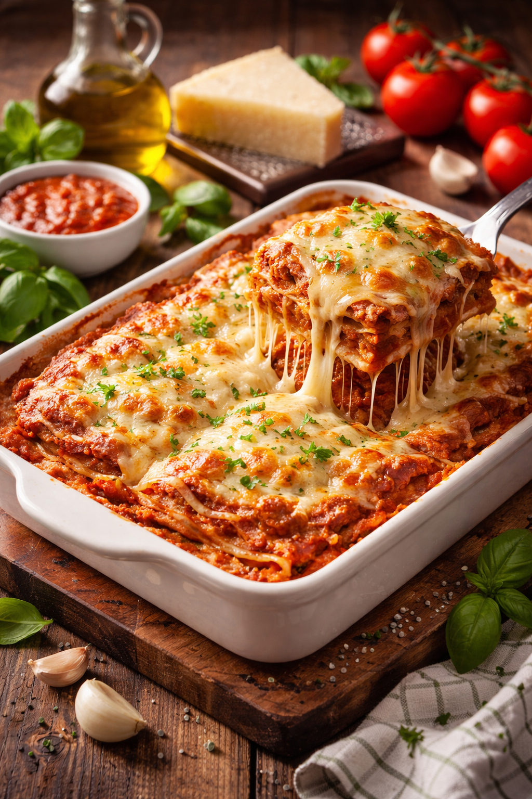

Lasagna

Description
Lasagna is a wide, flat sheet of pasta. Lasagna can refer to either the type of noodle or to the typical lasagna dish which is a dish made with several layers of lasagna sheets with sauce and other ingredients, such as meats and cheese, in between the lasagna noodles.
Ingredients
- Cheese Filling: For this classic lasagna recipe, the filling contains ricotta and parmesan with seasonings and a couple of tablespoons of parsley. No ricotta? No problem, cottage cheese works just fine in this recipe!
- Meat: I use both Italian sausage and ground beef for great flavor. If using all beef, add one fourth teaspoon of fennel seeds and some Italian seasoning to the meat mixture for flavor.
- Sauce:To keep this sauce quick, I use pasta sauce or marinara sauce (it is easy to make from scratch with crushed tomatoes and canned tomatoes if you would prefer).
- Spinach (variation): To make a spinach lasagna, squeeze out most of the moisture of defrosted frozen spinach and add it along with the cheese layer.
Steps
- Boil pasta: Cook in a large pot of salted water per the recipe below.
- Prepare meat sauce: Cook sausage and beef with onion and garlic. Drain well, add the pasta sauce & simmer it for a few minutes to thicken.
- Combine cheese mixture: Stir the cheese mixture together in a bowl.
- Layer & bake: Layer the meat sauce and cheese mixture with lasagna noodles and bake until browned and bubbly.